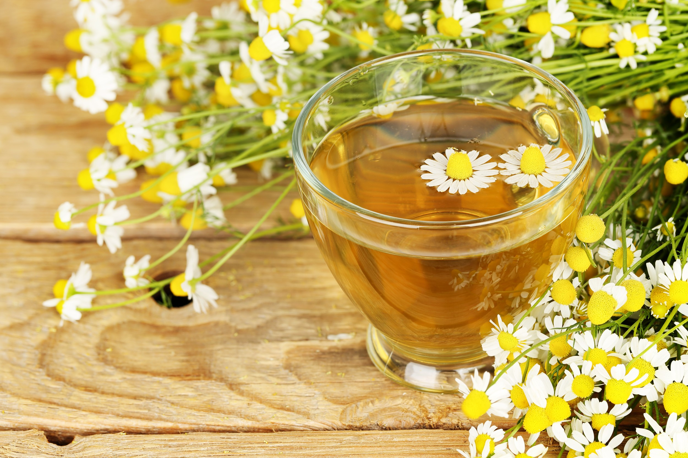

-
Chá de Camomila
Benefícios:
-alivia cólicas menstruais
-controla a diabetes
-alivia os sintomas da gripe
-melhora o sono
-alivia problemas no estômago
-
Chá de Hortelã

Veja sobre seus benefícios e a forma de preparo desse delicioso chá
-
Chá com Leite

Aprenda a fazer essa deliciosa receita inglesa de chá com leite!